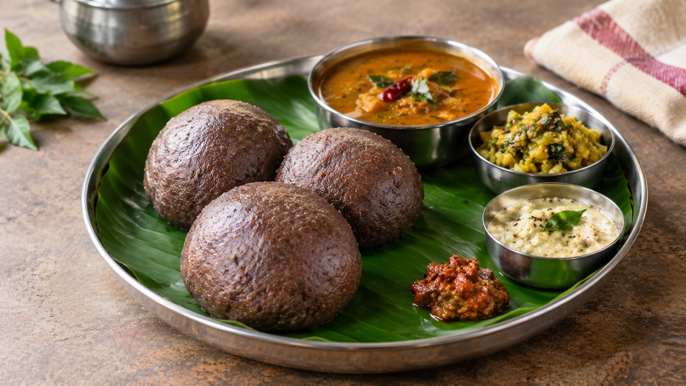

01
Bassaru
A flavorful Karnataka-style lentil and greens-based saaru that pairs naturally with soft Ragi Mudde.

A traditional Karnataka staple made from nutritious ragi flour and water.
Ragi Mudde is a traditional Karnataka dish prepared by cooking ragi flour with water and shaping it into soft, hearty balls. It is especially enjoyed with spicy curries, saaru and traditional nati-style dishes.
Ragi Mudde is traditionally enjoyed with flavorful curries and gravies that complement its earthy taste and soft texture.
A flavorful Karnataka-style lentil and greens-based saaru that pairs naturally with soft Ragi Mudde.
Spicy chicken or mutton curry is a traditional accompaniment enjoyed with Ragi Mudde in Karnataka.
Warm, spiced gravies add moisture and rich flavor to the hearty Ragi Mudde.
Explore traditional local eateries where you can experience Karnataka-style food in and around Kolar.
📍 Gowripete, Kolar
A traditional local restaurant where visitors can enjoy Ragi Mudde with Karnataka-style curries and meals.
📍 Kanakanapalya, Kolar
A local mess known for traditional Karnataka-style food and hearty Ragi Mudde combinations.
📍 Doddapet, Kolar
A long-established local eatery associated with traditional Ragi Mudde and nati-style chicken and mutton dishes.
Ragi Mudde reflects Karnataka's traditional food culture and is especially associated with hearty meals served with saaru, vegetables and nati-style curries.